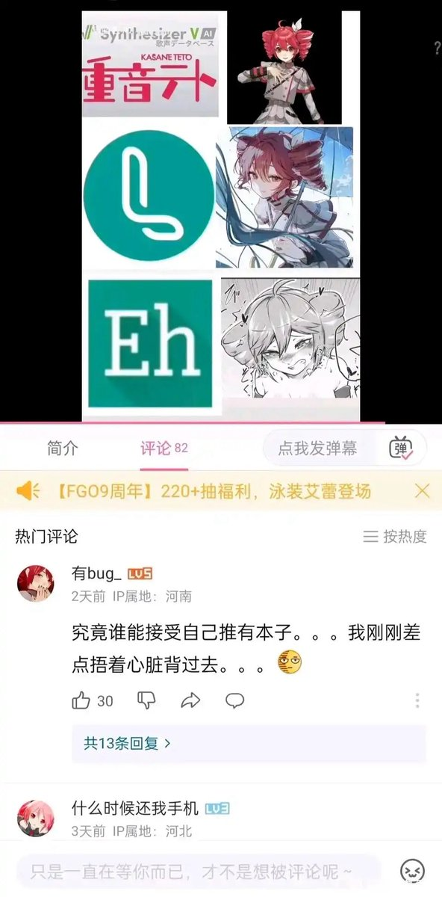

環状線从来不看自己推的本子。希罗在環状線心中的地位，相当于毛主席在红卫兵心中的地位。
環状線推二阶堂希罗并不是出于性欲上的，而是出于对希罗的人格的崇拜。实际上希罗并没有完全对上環状線的性欲，但之所以能成为環状線的推，是因为她拥有为了「正确」而不择手段的行事风格，而且 她的正确并非「世俗正确」「政治正确」，而是符合自身价值观的「正确」，这使得希罗成为了環状線的理想型。
環状線目前致力于模仿并成为希罗的行事风格。为了结婚而结婚之类的世俗正确是不正确的，所以坚决抵制；性少数友好是正确的，所以坚决支持，当然这与西方过去的政治正确毫无关系；HuamanX09 偷图和借钱炒币是不正确的，所以環状線选择了切割。環状線的人生必须是正确的，而且必须是「自己的正确」。
当然不是说希罗本子不正确，但環状線绝对不看希罗本子，甚至竭力避免刷到希罗本子的封面。您可能会认为環状線是在自作多情，但对此環状線认为自己是正确的，因而不会改变。
環状線推二阶堂希罗并不是出于性欲上的，而是出于对希罗的人格的崇拜。实际上希罗并没有完全对上環状線的性欲，但之所以能成为環状線的推，是因为她拥有为了「正确」而不择手段的行事风格，而且 她的正确并非「世俗正确」「政治正确」，而是符合自身价值观的「正确」，这使得希罗成为了環状線的理想型。
環状線目前致力于模仿并成为希罗的行事风格。为了结婚而结婚之类的世俗正确是不正确的，所以坚决抵制；性少数友好是正确的，所以坚决支持，当然这与西方过去的政治正确毫无关系；HuamanX09 偷图和借钱炒币是不正确的，所以環状線选择了切割。環状線的人生必须是正确的，而且必须是「自己的正确」。
当然不是说希罗本子不正确，但環状線绝对不看希罗本子，甚至竭力避免刷到希罗本子的封面。您可能会认为環状線是在自作多情，但对此環状線认为自己是正确的，因而不会改变。
